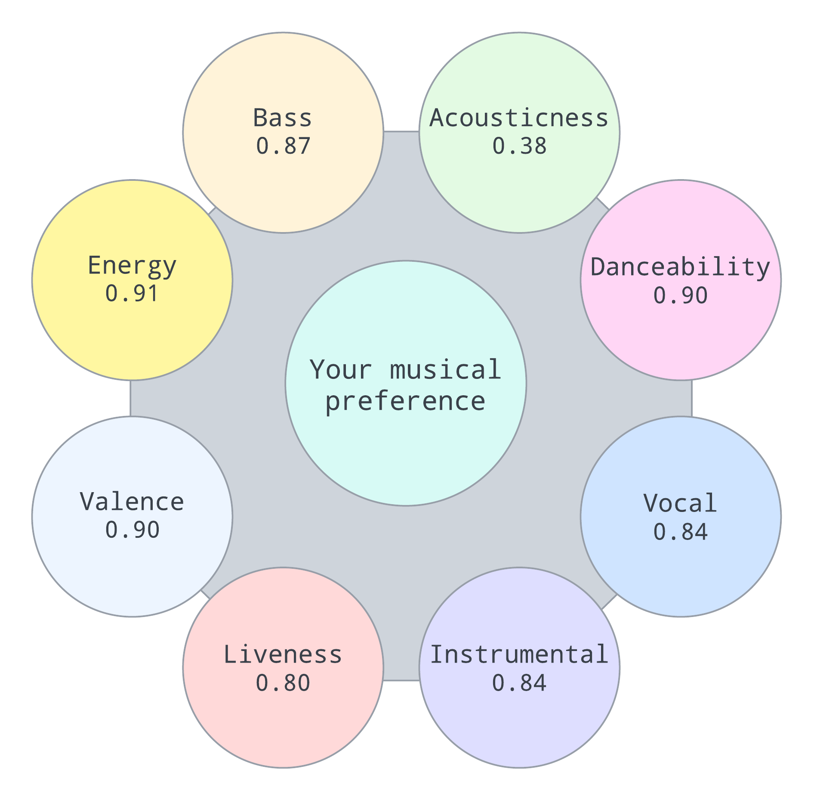

SoundSift
Welcome to SoundSift
Discover a new horizon in music exploration with SoundSift, a platform that aims to elevate the music discovery experience using advanced AI technology. We're commited to offering a unique and personalised music recommendation service that delves into the intrinsic characteristics of every track. With SoundSift, you're not just finding songs; you're uncovering the soundtrack to your life, curated by innovation.
Song recommendations
Here are some song recommendations based on your listening activity last night.

Super Trouper
ABBA
4:11

Waterloo
ABBA
2:47

Back In Black
ACDC
4:14
Visualise your musical tastes
Here is a visualisation of your musical activity for the past week.
